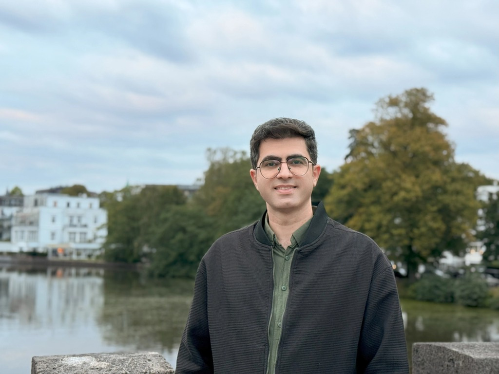

I am an Electrical Engineer and Technical Project Manager based in Denmark, with experience across electrical project delivery, HV/MV/LV systems, substations, critical power, industrial infrastructure, construction, commissioning and handover.
I currently work with Turner & Townsend as a Technical Project Manager – OFCI, supporting the delivery of owner-furnished equipment packages on a major data centre project in Denmark. My role brings together vendors, contractors, engineering, schedules, site readiness, quality and commissioning interfaces.
My background combines technical engineering with practical execution. I have worked across design coordination, supplier and contractor interfaces, equipment packages, FAT/SAT, site installation, QA/QC, commissioning readiness, technical close-out and handover.
Earlier roles included HV/MV substations, protection and control, SCADA/RTU interfaces, UPS-backed critical-power systems, industrial electrical delivery and power-systems research.
Supporting the delivery of Owner Furnished Contractor Installed (OFCI) equipment packages for a major data centre project in Denmark.
CCS-related energy and industrial infrastructure projects involving electrical construction, technical coordination, QA/QC, commissioning readiness and handover.
Worked across 63/132/230 kV substations, transformers, switchgear, protection and control, AC/DC auxiliaries, SCADA/RTU interfaces, supplier coordination, FAT/SAT and energisation readiness.
Delivered LV and UPS-backed critical-power scopes for server-room and data-centre environments, coordinating clients, suppliers, contractors, installation, testing and handover.
Worked on renewable-energy, utility and industrial electrical projects involving MV/LV distribution, switchgear, transformers, cabling, grounding, installation, testing and commissioning support.
Conducted modelling and simulation work related to smart grids, wind integration, reactive power, harmonics and power-quality improvement using MATLAB and Python.
For the full publication list, visit Google Scholar or ORCID.
Recipient of a Best Paper Award at the 5th IEEE International Conference on Power Engineering, Energy and Drives (PowerEng 2015).
The best way to reach me is via LinkedIn.